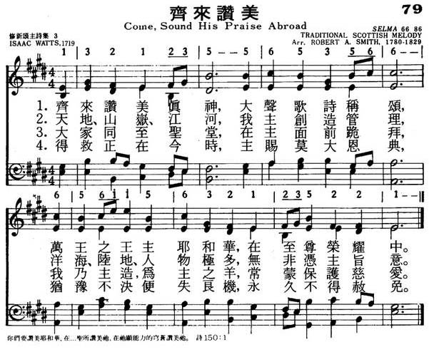

|
|
|
|
1 Come, sound His praise abroad, 2 He formed the deeps unknown; 3 Come, worship at His throne, |
079齐来赞美
1.齐来赞美真神，大声歌诗称颂，
万王之王主耶和华，在至尊荣耀中。 2.天地，山岭，江河，我主创造管理， 洋海，陆地，人物极多，无非凭主旨意。 3.大家同至圣堂，在主面前跪拜， 我乃主造，为主之羊，常蒙保护慈爱。 4.得救正在今时，主赐莫大恩典， 犹豫不决便失良机，永久不得赦免。
|
|
https://www.mred365.cn/szxg/7082.html

|
|
|
|
|


https://youtu.be/kjzmo2iE_9s -
https://youtu.be/65Fe10A1VrQ
| Text: | Come, Sound His Praise Abroad |
| Author: | Rev. Isaac Watts |
| Tune: | SILVER STREET |
| Composer: | Isaac Smith |
Tune Information
| Title: | SELMA |
| Adapter: | Robert Archibald Smith (1825) |
| Meter: | 6.6.8.6 |
| Incipit: | 13212 35565 35666 |
| Key: | E♭ Major |
| Source: | Traditional, from the Isle of Arran |
| Copyright: | Public Domain |
LX1517
Come, Sound His Praise
Abroad
079齐来赞美
颂新
“COME, SOUND HIS PRAISE ABROAD” hymnstudiesblog
“O come, let us sing unto the Lord: let us make a joyful noise to the rock of our salvation” (Ps. 95.1)
INTRO.:
A hymn which encourages us to sing unto the Lord and make a joyful noise is “Come, Sound His Praise Abroad.” The text, based on Ps. 95, was written by Isaac Watts (1674-1748). It was first published in his 1719 Psalms of David Imitated in the Language of the New Testament. The tune (Silver Street; also called Falcon, Falcon Street, and Newton) most often used with it was composed by Isaac Smith, who was born at London, England between 1725 and 1735, most likely in 1734. Serving as song director with the Alice Street Meeting House at Goodman’s Fields East London, he received 40 pounds a year for his services and was possibly the first salaried church song leader. The tune was published about 1770, probably in his Collection of Psalm Tunes in Three Parts. In various books, this same tune is used with “Soldiers of Christ, Arise” by Charles Wesley, “Sow in the Morn Thy Seed” by James Montgomery, and “Grace, ‘Tis a Charming Sound” by Philip Doddridge. Smith is also credited with another tune (Abridge) dated around 1770 to 1780, which is sometimes used with the hymn “O Jesus, King Most Wonderful” among others. After making his living as a linen draper, Smith died on Dec. 14, 1805, at Walworth in Newington, Surrey, England.
Among hymnbooks published by members of the Lord’s church during the twentieth century, the text “Come, Sound His Praise Abroad” appeared in the original (1986) edition of Hymns for Worship with words only under the heading “Adoration and Praise” (#504a) to be sung to the same tune as “A Charge to Keep I Have.” Today it appears with a tune (Cambridge) by Ralph Harrison in the 1986 Great Songs Revised edited by Forrest M. McCann. Other books in my collection which have the song are the 1913 Good Old Songs (where the tune is attributed to J. Street); the 1935 Methodist Hymnal (with “Silver Street) and the 1964 Methodist Hymnal (with “Cambridge”); and the 1961 Trinity Hymnal (with “Silver Street”) and the 1990 Trinity Hymnal Revised (with a 1985 tune “Krewson” by Ronald A. Matthews).
The song expresses praise and worship unto the Lord for His creation and His works.
I. Stanza 1 extols His universal sovereignty
“Come, sound His praise abroad, And hymns of glory sing;
Jehovah is the sovereign God, the universal King.”
A. God is worthy of our praise: Ps. 40.3
B. One reason is that He as the sovereign God He is all powerful: Ps. 62.11
C. Also, He is the universal King of all creation: Ps. 10.16
II. Stanza 2 extols His creation
“He formed the deeps unknown; He gave the seas their bound.
The watery worlds are all His own, And all the solid ground.”
A. God created all things, even the deep things that are unknown: Ps. 148.5
B. This included the seas and the watery worlds: Ps. 33. 6-7
C. It also included the solid ground or earth: Ps. 24.1
III. Stanza 3 extols His works
“Come, worship at His throne; Come, bow before the Lord.
We are His works, and not our own; He formed us by His word.”
A. We are urged to worship and bow down before the Lord’s throne: Ps. 45.11
B. The reason given is that we, ourselves, are among His great works: Ps. 145.10
C. It is He who made us, and not ourselves: Ps. 100.3
IV. Stanza 4 extols His graciousness
“Today attend His voice, Nor dare provoke His rod;
Come, like the people of His choice, And own your gracious God.”
A. Because we worship the powerful, creating God we should attend to His great
voice: Ps. 46.6
B. This is much prefered to provoking His rod: Ps. 78.40
C. Thus, by our obedience we show that we own Him to be a gracious God: Ps.
103.8
V. Stanza 5 extols His language of grace
“But if your ears refuse The language of His grace,
And hearts grow hard, like stubborn Jews, That unbelieving race.”
A. However, some refuse the language of His grace: Ps. 78.10
B. In refusing His grace, they allow their hearts to grow hard and stubborn: Ps.
78.10
C. Such behavior is an indication of unbelief through rebellion: Ps. 107.11
VI. Stanza 6 extols His vengeance
“The Lord, in vengeance dressed, Will life His hand and swear,
‘You that despise my promised rest Shall have no portion there.”
A. While God is gracious to those who obey Him, He is a God of vengeance toward
those who refuse Him: Ps. 99.8
B. God has promised rest to those who do His will: Ps. 94.12-13
C. However, those who despise His promised rest will be punished and will have
no portion in His rest but fire and brimstone will be their portion: Ps. 11.6
CONCL.:
In Hymns and History, Forrest M. McCann noted, “It was originally in six stanzas, but stanzas 5 and 6 are never included for obvious reasons in twentieth century hymnals.” Perhaps, the reasons are not so obvious to everyone. It is true that there is a clear break in the Psalm in that following the first seven and a half verses of praise to God for His great power, there follow four and a half verses of warning based on the fact that our all powerful God is also a jealous God. Yet, the Psalm is a divinely inspired whole. Is it just barely possible that the “obvious reasons” for the omission of the last two stanzas are something related to political correctness? Certainly, a fear of punishment due to disobedience is one factor that should motivate us to “Come, Sound His Praise Abroad.”